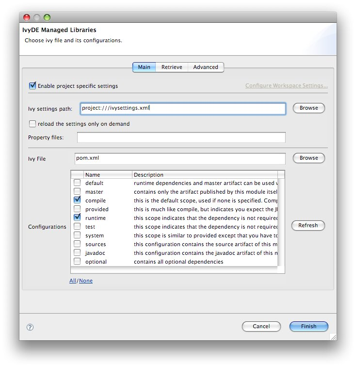
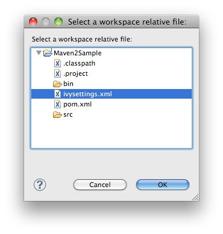
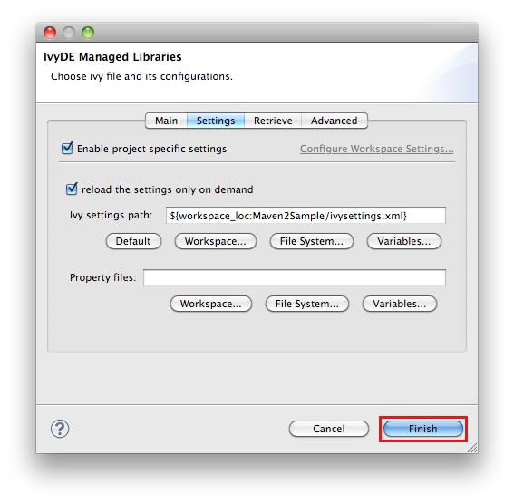

If you want to use a Apache Maven™ pom.xml instead of an ivy.xml file, you can select a pom file in the configuration options of the IvyDE classpath. When a maven pom is selected, the configurations list is updated with all maven scopes. Both examples below are a good illustration of the simplicity of using maven poms in Apache IvyDE: <ul> <li><a href="#one">Maven1 sample</a></li> <li><a href="#two">Maven2 sample</a></li> </ul> <h1><a name="one"></a>Maven1 Sample</h1> This sample presents a simple use case involving a maven pom and the IvyDE classpath container. We are going to create an Eclipse™ project on commons-httpclient sources. <b> - Download the <a href="http://archive.apache.org/dist/httpcomponents/commons-httpclient/3.0/source/commons-httpclient-3.0-src.zip">commons httpclient sources</a></b> <b> - Unzip this file (c:/tmp/commons-httpclient/)</b> <b> - Create a new Eclipse java project based on the unzipped sources (c:/tmp/commons-httpclient/)</b> <center> <img src="../images/httpProject_errors.jpg"><br /> <u><b>Note:</b></u> your project willnot compile: some imports cannot be resolved. </center> <b> - Add a new classpath container based on the "project.xml" pom and select "default" configuration (maven scope)</b> <center> <img src="../images/httpProject_pom.jpg"> </center> <b> - Finished. The project compiles!</b> <center> <img src="../images/httpProject_clean.jpg"> </center> <h1><a name="two"></a>Maven2 Sample</h1> This sample demonstrates how the IvyDE classpath container on a Apache Maven 2 pom can handle transitive dependencies. <b> - Create a new empty java project in Eclipse.</b> <b> - In your project, create an <tt>ivysettings.xml</tt> file: </b> <code><ivysettings> <conf defaultResolver="ibiblio"/> <resolvers> <ibiblio name="ibiblio" /> </resolvers> </ivysettings> </code> Using the m2compatible attribute, you can benefit from Apache Maven 2 repository compatibility. <b> - In your project, create a <tt>pom.xml</tt> file: </b> <code> <project> <modelVersion>4.0.0</modelVersion> <groupId>com.mycompany</groupId> <artifactId>myproject</artifactId> <version>1.0-SNAPSHOT</version> <dependencies> <dependency> <groupId>commons-httpclient</groupId> <artifactId>commons-httpclient</artifactId> <version>3.0</version> </dependency> </dependencies> </project> </code> <b> - On the pom.xml file, open the context menu and click on "Add Ivy Library...":</b> <b> - Select the configurations <tt>compile</tt> and <tt>runtime</tt></b> <center>  </center> <b> - Go into the "Settings" tab, select "Enable project specific settings" and click on the "Workspace..." button</b> <center> <img src="../images/maven2classpath1_settings.jpg"/> </center> <b> - Choose the ivysettings.xml file in your project<b> <center>  </center> <b> - click "Finish"</b> <center>  </center> <b> - That's all! Your IvyDE classpath container resolves all dependencies including those that were transitive to the commons-httpclient module!</b> <center> <img src="../images/maven2classpath2.jpg"/> </center>